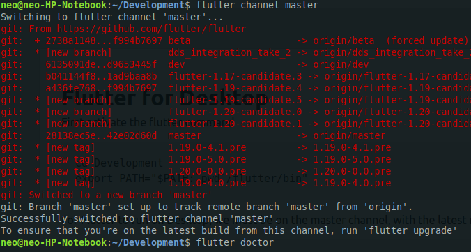
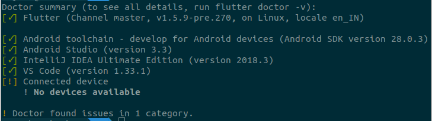
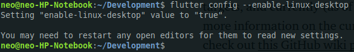
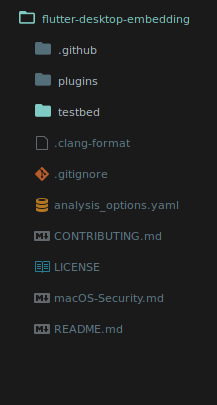

Configuring for Linux
First activate the flutter command
cd Development export PATH="$PATH:`pwd`/flutter/bin"
For Flutter to run on Desktop, we must be on the master channel, with the latest release. To ensure the same, fire up a terminal and run the following commands.
flutter channel master
You will see a output like the following:
Now you need to run flutter doctor to see if everything is all right.
flutter doctor
You will see output like below:
Now with that out of our way, we can see that our even though I am on Ubuntu, the Linux system is not being displayed as a connected device, capable of running Flutter. This is because by default Flutter does not not have desktop support enabled.
To enable support for your target environment:
Linux: $ flutter config --enable-linux-desktop macOS: $ flutter config --enable-macos-desktop Windows: $ flutter config --enable-windows-desktop
On linux the output would look like following:
Now run flutter doctor to get the output like the following.
You need to install toolchain for Linux as you will be developing Linux software. Go ahead and install the suggested tools from the above picture. If all goes fine, do a flutter doctor again.
Congratulations : Doctor said everything is fine. You are all set to create a new project.
Create Project
Flutter for Desktop is still an experimental feature, which means that there is no tooling support for Flutter, also the flutter create command does not currently support creating a new desktop application. So the only option is to manually configure the system specific files. Thankfully for us, the Flutter team at Google already did that for us.
Go ahead and run this in the terminal:
git clone https://github.com/google/flutter-desktop-embedding.git cd flutter-desktop-embedding
This will clone the repo and if you open it your project directory would look like this:
Now the folder testbed is what you will be working on. Get into the testbed directory and install the nessesary packages:
cd testbed flutter packages get
Just one last step before we go ahead and run our app. The desktop system specific build tools are not download by default, and even though Flutter will download the same when we first run our app, I want to ensure that we have it beforehand. To download the same, run:
flutter precache --linux
Congratulations! We are now ready to run our Flutter app as a Desktop application.
Running Flutter Desktop App
In the testbed directory, run the following command to run the app:
flutter run
It will lunch the app: